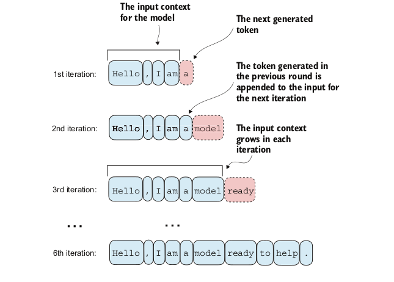
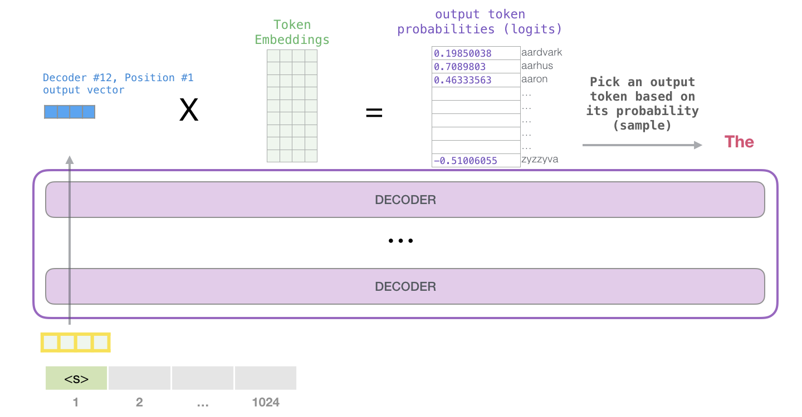
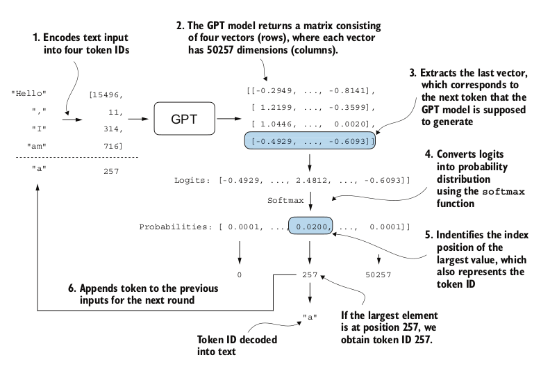
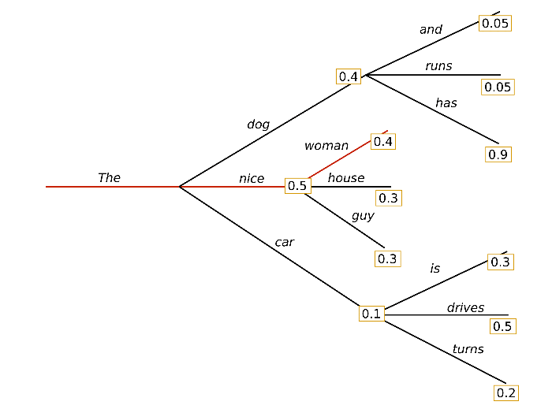
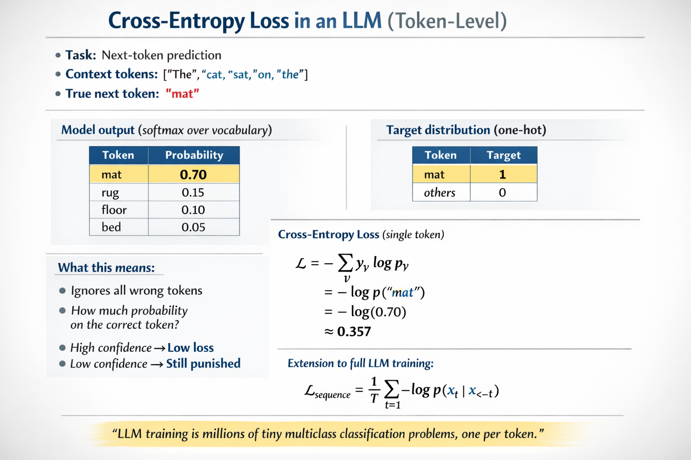
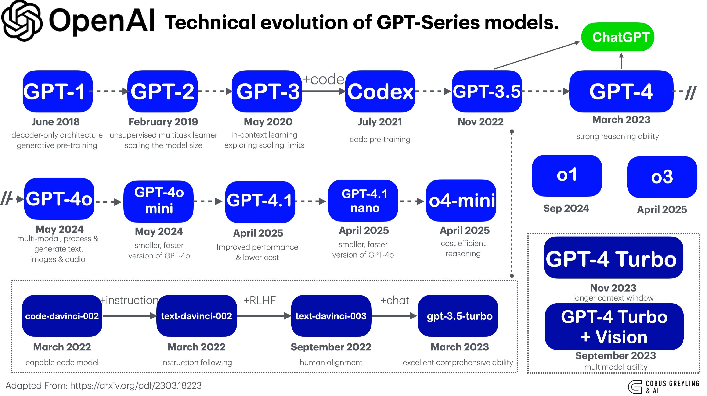
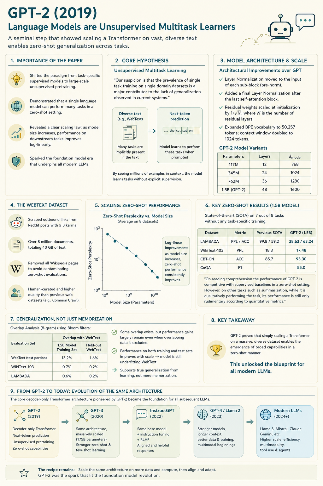
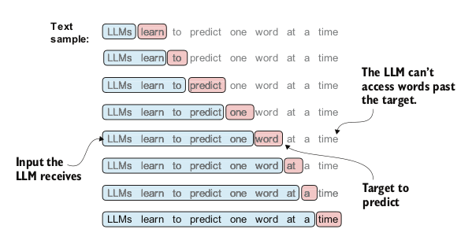
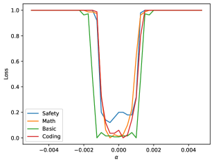

GPT-2 : Training
Large Language Models : A Hands-on Approach
Topics Covered
GPT-2 Architecture Review
- Layer Normalization
- Self-Attention in GPT-2
- Feed-Forward Network (FFN)
- Residual Connections
Training GPT-2
- Text generation
- Greedy decoding loop
- Training loop
GPT-2 Architecture
- GPT model stacks multiple transformer decoder blocks
- Each block has:
- Layer Normalization
- Masked Multi-Head Self-Attention layer
- Feed-Forward Neural Network (FFN)
- Residual Connections
- Layer Normalization
- Final output layer

GPT-2 Architecture
GPT 2 small (124M parameters) has:
- 12 Transformer blocks
- 768-dimensional hidden states (embeddning vector size)
- 12 attention heads
- Vocabulary size: 50,257 tokens

Text Generation
Autoregressive Text Generation
LLMs generate text one token at a time through an iterative process:
- Start with an input context (e.g., “Hello, I am”)
- Model predicts the next token probability distribution
- Select the next token (highest probability = greedy decoding)
- Append token to context
- Repeat until desired length

Key Insight: The model consumes its own previous outputs as future inputs - this is the autoregressive property.
Logits to Token Selection
The GPT output is logits, not probabilities.
- Logits ∈ ℝ^V
- Softmax converts logits -> probability distribution
- Argmax selects most likely token

Understanding the Generation Flow
Input -> Token IDs -> Model -> Logits -> Softmax -> Token Selection -> Output
| Step | Operation | Shape Transformation |
|---|---|---|
| 1 | Tokenize input | “Hello, I am” → [15496, 11, 314, 716] |
| 2 | Model forward | (1, 4) → (1, 4, 50257) |
| 3 | Extract last logits | (1, 4, 50257) → (1, 50257) |
| 4 | Softmax | logits → probabilities |
| 5 | Argmax | select token ID 257 → “a” |
| 6 | Concatenate | extend sequence for next iteration |

Greedy Decoding Loop
Greedy decoding selects the highest-probability token at each step.

Properties:
- Deterministic
- Fast
- Often repetitive / dull
Generation from an Untrained Model
Before training:
- Weights are random
- Logits are random
- Token probabilities are near-uniform
With vocab size = 50,257:
Initial probability ≈ 1 / 50,257 ≈ 0.00002
Thus generated text is effectively random noise.
Training the GPT
Training Overview
- Training Loop
- Loss Optimization
- Data Loading
- Model Evaluation
- Using Pretrained weights
Evaluating Generative Text Models
Why Evaluation Matters
Before training, we need metrics to:
- Measure model performance quantitatively
- Track training progress
- Detect overfitting
- Compare different models
Key Challenge: How do we numerically assess the quality of generated text?
Solution: Use the model’s own probability estimates vs true probabilties for the “correct” next tokens.
Cross Entropy Loss for Language Modeling
The training objective: Maximize the probability of the correct next token
Given:
- Inputs: Token IDs the model sees
- Targets: Token IDs the model should predict (inputs shifted by 1)
Cross-entropy loss measures how well the model’s predicted probabilities match the true next tokens.
Cross Entropy Loss for Language Modeling
Cross-entropy loss measures how well the model’s predicted probabilities match the true next tokens.
Mathematical Formula:
\[ \text{Loss} = -\frac{1}{N} \sum_{i=1}^{N} \log P(x_i^{\text{target}}) \]
Where:
- \(N\) = total number of tokens
- \(P(x_i^{\text{target}})\) = predicted probability for the correct token at position \(i\)
- The negative sign converts it to a loss (we want to maximize probability = minimize negative log probability)
Calculating Cross Entropy Loss

Understanding Cross Entropy Loss
Step-by-step computation
- Get logits from model: shape
(batch, seq_len, vocab_size) - Apply softmax to get probabilities
- Extract target probabilities: probability assigned to correct tokens
- Apply logarithm: log probabilities are more numerically stable
- Average over all tokens
- Negate: we minimize negative log-likelihood
In PyTorch, we can compute this in one step using cross_entropy function:
Initial loss (untrained model): ~10.82
Target loss (well-trained): decreases toward a floor set by the data’s entropy (~3 for GPT-2 small)
Perplexity: Interpretable Metric
Perplexity = exp(cross_entropy_loss)
Interpretation: The effective vocabulary size the model is “uncertain” about at each step.
Interpretation:
- Effective number of equally likely tokens
- Lower is better
| Loss | Perplexity | Interpretation |
|---|---|---|
| 10.82 | 50,257 | Random guessing (vocab size: 50,257) |
| 5.0 | 148 | Moderate uncertainty |
| 2.0 | 7.4 | Low uncertainty |
| 0.5 | 1.65 | Very confident |
GPT-2 : Radford et al. (2019)

GPT-2 : Radford et al. (2019)

Processing Data for Training
- Given a text corpus
- split into training and validation sets
- for each set encode it to token IDs
- create input-target pairs
- Inputs and targets are created by shifting token IDs by one position

In Pytorch
- Dataset Encodes all text to token IDs
- DataLoader handles batching of and shuffling of sequences. Within a sequnce, no shuffling happens, the order of tokens is preserved:
Training vs Validation Loss
During training we split data into :
- Training set
- Validation set
What to watch for:
- Training loss decreases, Validation loss decreases -> Model is learning and generalizing
- Training loss decreases, Validation loss increases -> OVERFITTING!
The Training Loop
During Training we update model weights to minimize loss through backpropagation and gradient descent.

Training Loop in code
Loading and Saving Model Weights
We must save trained models to:
- Avoid retraining
- Share models with others
- Resume training later
- Deploy to production
# ============ SAVE ============
torch.save(model.state_dict(), "model.pth")
# Save model + optimizer (for resuming training)
torch.save({
"model_state_dict": model.state_dict(),
"optimizer_state_dict": optimizer.state_dict(),
}, "model_and_optimizer.pth")
# ============ LOAD ============
# Load weights into fresh model
model = GPTModel(GPT_CONFIG_124M)
model.load_state_dict(torch.load("model.pth", map_location=device))
model.eval() # Set to evaluation mode
# Resume training
checkpoint = torch.load("model_and_optimizer.pth", map_location=device)
model = GPTModel(GPT_CONFIG_124M)
model.load_state_dict(checkpoint["model_state_dict"])
optimizer = torch.optim.AdamW(model.parameters(), lr=5e-4, weight_decay=0.1)
optimizer.load_state_dict(checkpoint["optimizer_state_dict"])
model.train() # Set to training modeLLM Loss Surfaces
LLM training optimizes a high-dimensional non-convex loss surface defined by:
L(θ) = −E[log p_θ(tokenₜ₊₁ | contextₜ)]
Key properties:
- Billions of parameters
- Extremely overparameterized
- Many equivalent minima
- Flat basins dominate

More details in :
Questions?
…